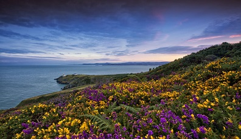
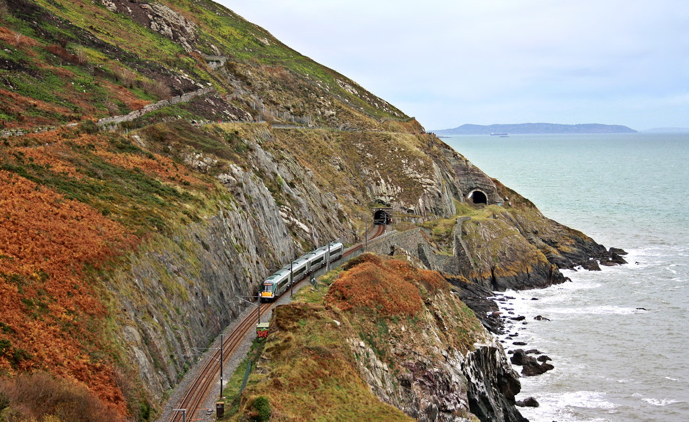
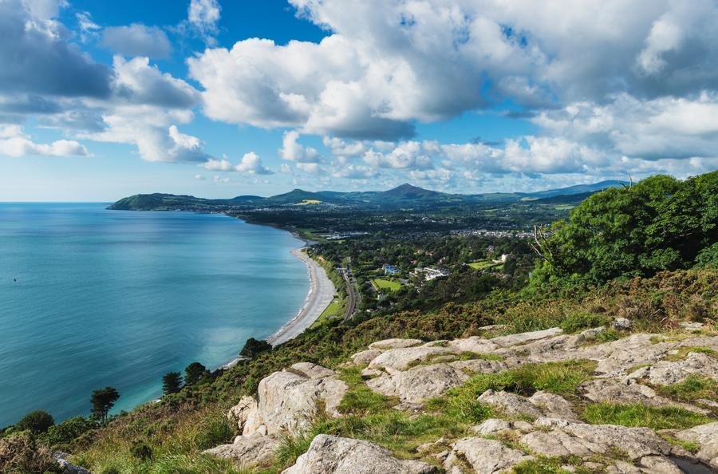
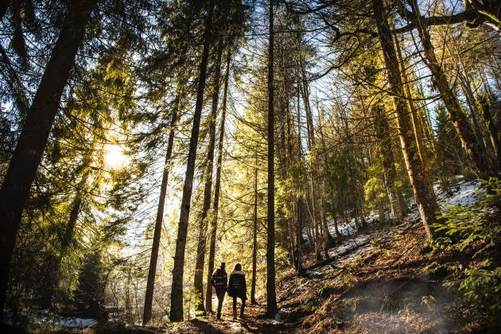

Here there are some places close to Dublin and you can easily go there:
Howth Cliff Walk

This is a beautiful and easy path for a strool near Dublin.You can go there by train, called DART, in Ireland.
The last stop is the train station in Howth, very close to the beginning of the trail. So breathe
and enjoy this wonderfoul view.
Distance:6km.
Estimated time: 2.5hrs
Total height climbed: 130m
Grade: Easy.
Suitable for: families with older children
Public Transport: Howth Railway Station (terminus for the DART service) or Dublin Bus.
Parking: Free anywhere near Howth seafront
Bray Head Cliff Walk

Again, another easy route near Dublin. We can also go by train. The last stop can be Bray or Graystones
Railway Station. You can choose start the trail in Bray to Greystones or vice and verse.
Distance: 7km
Estimated time: 2.5hrs
Total height climbed: 130m
Grade: Moderate
Suitable for: families with older children
Public Transport: Bray Daly Railway Station (terminus for the DART service) or Dublin Bus.
Killiney Hill

Killiney Hill is a popular destination for hikers who enjoy spectacular views,
over the surrounding areas: Dublin to the northwest, the Irish Sea and the mountains of Wales (on a
clear day) to the east and southeast, and Bray Head and the Wicklow Mountains to the south.
Distance: 1.8 mile
Estimated time: 2.5hrs
Total height climbed: 456 ft
Grade: Moderate
Public Transport: Dalkey Dart Station or Killiney Dart Station (terminus for the DART service) or Dublin Bus.
Cruagh Wood

Located south of the Dublin city, Cruagh or Coill Na Craobhai is one of three mountain peaks (Kilakee & Glendoo
the others) identified as such on the operating system maps, although it differs little in altitude from its immediate surroundings.
Distance: 5km
Estimated time: 1hr
Highest point: 522 ft
Grade: Moderate
Public Transport: there isn't public transport.The only way to get there is by car, fortunately there is car park.
Glendalough National Parks
Spinc's summit overlooks the spectacular Glendalough Valley. A tough climb is rewarded with breathtaking views not
just of the Valley, but as you go up, the view over the Wicklow highlands opens up around you.
Distance: 9km
Estimated time: 3hrs 30mins
Total height climbed: 380m
Grade: Strenuous
Public Transport: there isn't public transport.The only way to get there is by car.